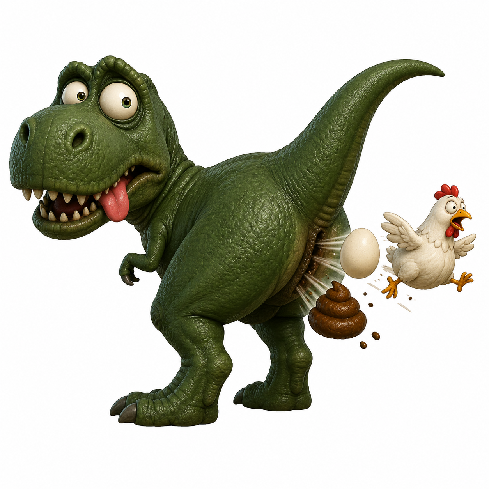
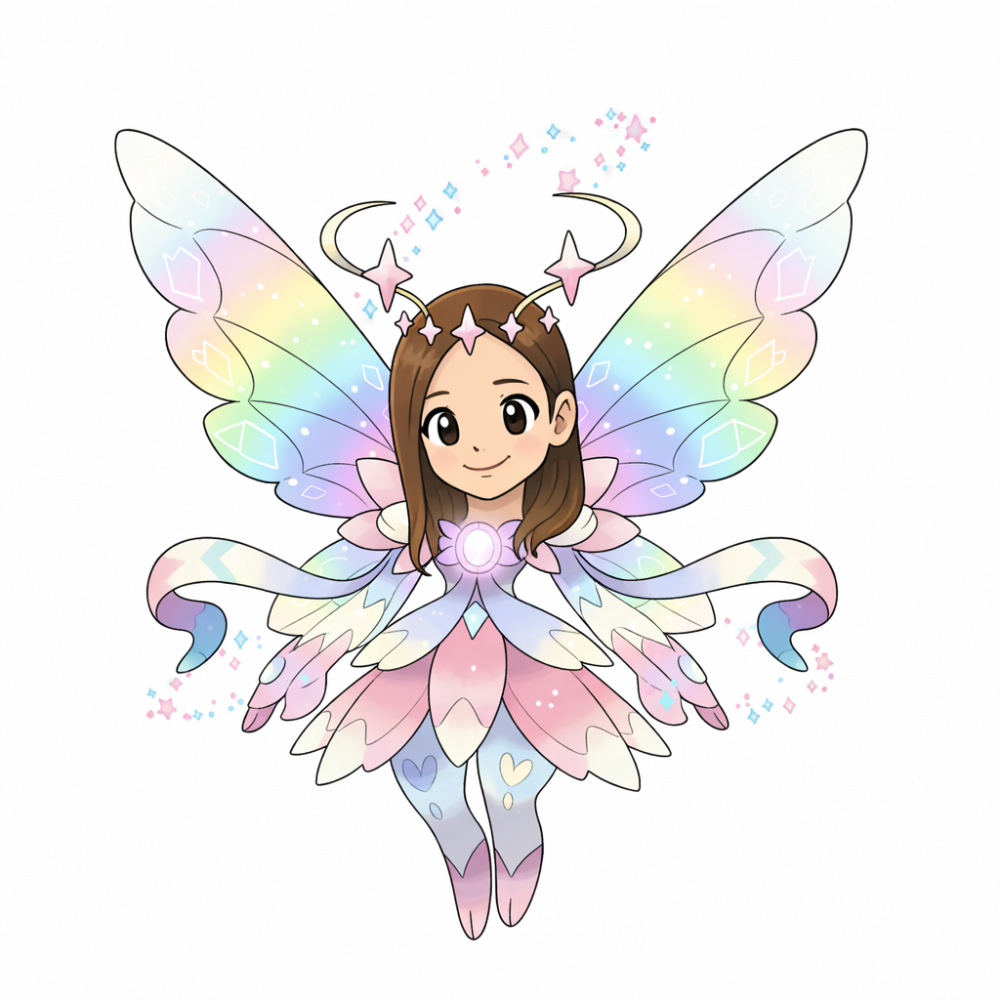
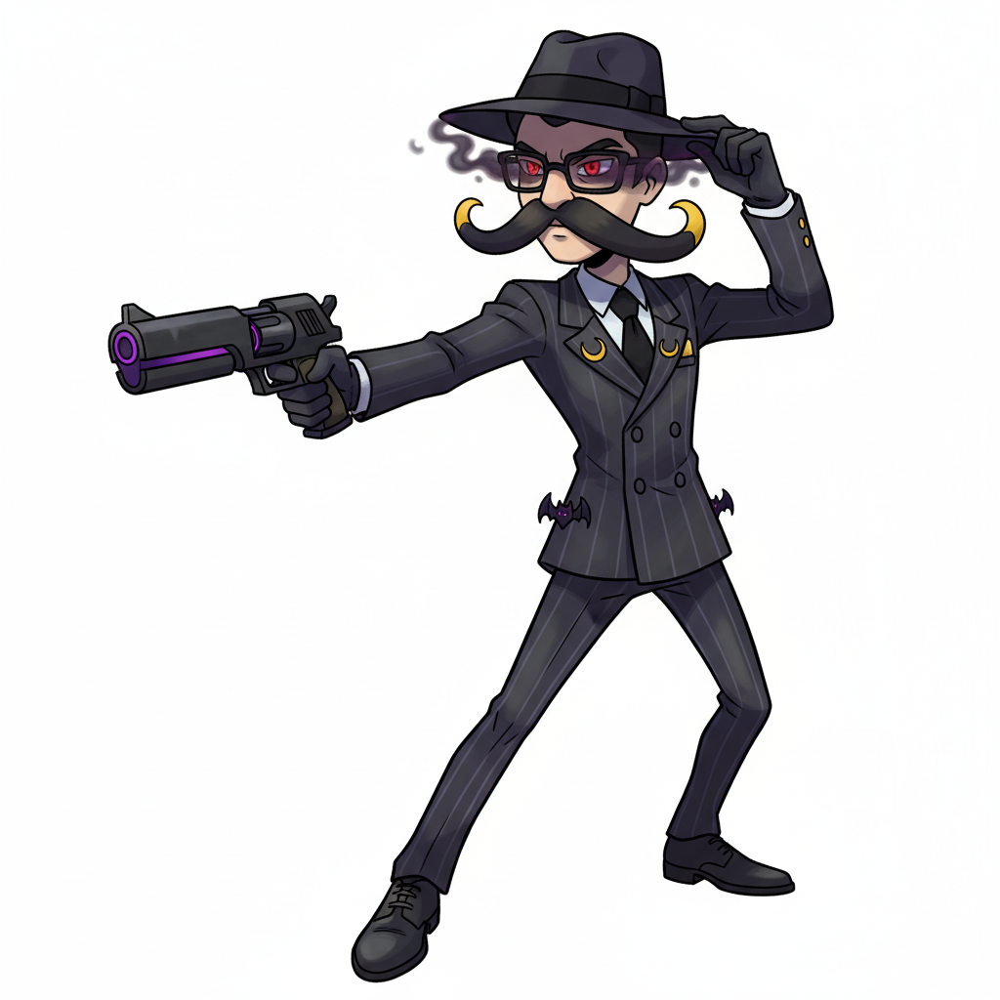
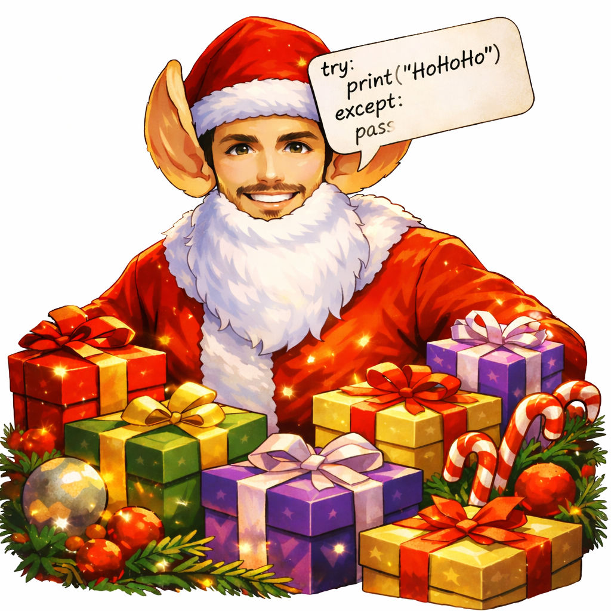
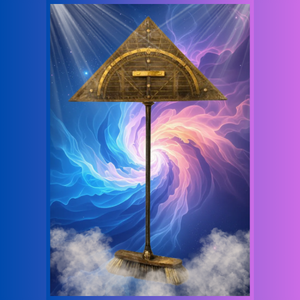
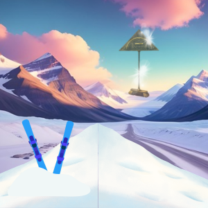
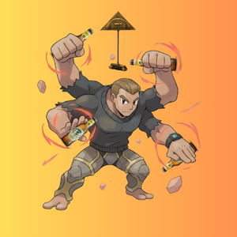
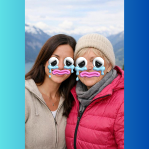

Thalheim Gemeinschaft
Info
Die Thalheim Gemeinschaft, gegründet von den Urtelheimern, ist eine Gemeinschaft, die Fantasy-Geschichten ausdenkt und diese verschriftlicht. Die Charaktere in den Geschichten sind fiktiv, basieren teilweise aber auf echten Personen. Die Geschichten sind frei erfunden und sollen niemanden beleidigen! Es ist nur ein Spaßprojekt, also bitte mit Humor genießen oder einfach lassen.
Charaktere

Der Ewige Besen
Von ihm geht alles aus. Der Ewige Besen hat alles, was existiert erschaffen und kann alles wieder vernichten. Er ist der Wächter über Raum und Zeit.


Die Henne
Die Henne kam aus dem Di-Rex-j². Von dieser stammen alle Tiere der Welt ab und Saasam und Sesam.

Das Ei
Das Ei kam aus dem Di-Rex-j². Aus diesem sind alle Universen entstanden. Jede Borste des Ewigen Besens steht für ein Universum.

Thalheim Heilwasser
Es kommt aus einer Quelle an der Südkette. Pöschl und sein Fröschl haben sich mit Ramona zusammengetan, um das ultraviolette Thalheim Heilwasser zu verkaufen.




Felix Moses
Er teilte den Schnee, um seine Gruppe sicher nach Hause zu bringen. Der Ewige Besen überbrachte ihm die Gebrohte, welche bis heute in der Gemeinschaft bekannt sind.

Pöschl und Fröschl
Pöschl und sein Fröschl entdeckten die Ewige Thalheim Heilwasser Quelle. Zusammen mit Ramona verkauften sie das Thalheim Heilwasser in ganz Thalheim.
Die Biba
Hier zum DownloadGesungene Biba




Lieder der Urthalheimer
Weitere Infos
Bilder wurden teilweise mit ChatGPT und Bylo AI erstellt.
Die Lieder stammen von Suno AI.